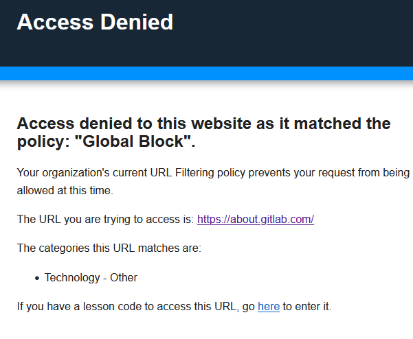

The OS-tan fandom has a centralisation problem
Imagine you're a high school student working on a research essay. You've got a topic in mind, your teacher has suggested some useful sites students can use, and you are ready to start digging into the research so you open up your search engine and type in your topic. You're expecting to see a list of helpful websites pop up, but instead, you're met with an unexpected obstacle when trying to access them: a plethora of blocked websites.
What's going on?
It turns out that many of the websites that you might find helpful for your research are blocked by your school. But why are these sites blocked? And why does it feel like a virtual gatekeeper is hindering you? The catch of this? Not all of the blocked content is inherently harmful or inappropriate. In fact, these blocked websites are victims of filtering systems that rely on broad categorizations and automated algorithms.
Let's get into the actual backstory, shall we?
The backstory of all this blocking stuff
Around 2019 or 2020, the school introduced a new system for blocking websites. The previous one was not so great. It was something that could supposedly be easily bypassed with tricks, but most students used their phones anyway.
It was a morning at school before class when I noticed a new screen pop up asking me to log into some portal on my phone as I latched onto the school network with a VPN running, but what was this portal for? I attempted several times to get into it until it eventually worked with the right username and password combination, but now it was asking me to install a certificate.
With me being the dumb kid at the time I installed it and well, everything ran fine with the usual sites being blocked without a VPN.
Turns out my school had recently gotten something known as "Cyberhound", but what is that? It's a platform that offers advanced threat protection through firewalls, category web filtering and virus & malware protection. On the surface, it seemed like a step in the right direction to ensure the safety and security of students' online experiences. However, little did students know the impact it would have in the later years. Since it was only just implemented in the school so it took time for sites to be reblocked again.
As time went on, students began to realize that the new Cyberhound system was much more effective in blocking websites compared to its predecessor. The days of easily bypassing website restrictions with simple tricks were over. The school's IT department had chosen a robust and comprehensive platform. However, as time passed, some students began to notice the drawbacks of the new system. Certain legitimate websites and educational resources were inadvertently blocked due to overzealous categorization or misidentification by the filtering algorithms.
Yet no student seemed to confront the IT guys. That's because they never really seemed to listen.
The issue?
The main issue here is with the IT team slowly getting more "rogue" and blocking harmless sites.
Take this for example. The following screenshot is from 2022. As you can see, the iPhone Wiki is blocked for two reasons: Hacking and Mac OS.
Hacking is understandable, but why is Mac OS blocked? There is nothing inherently harmful or inappropriate about Mac OS. It is not worthy of a category.
This is just one example of how filtering systems can be overzealous and block websites that are not actually harmful.
In this case, the iPhone Wiki can be a valuable resource for students who are researching Apple products. It is a shame that it is blocked simply because it contains information about Mac OS and talks about jailbreaks like people are going to jailbreak their devices that run newer iPadOS versions that can't be jailbroken yet or at all.
Now this is something more recent:

Let's think about this for a moment. Gitlab is a code repository and collaborative software development site but it is blocked. The average student wouldn't really use Gitlab unless they were in an IT class and borrowing code, but why is it blocked? And how is "Technology - other" a reason under Cyberhound's "Category Web Filtering"? If the IT department was concerned about students using Gitlab to cheat, they should have considered the educational value of the website. Gitlab is a valuable resource for students who are learning to code as they can view examples of code teachers haven't shown to the class.
The problem with blocked websites is that they're not always blocked for the right reasons. Some legit ones are blocked, but others are blocked because they contain content that "falls" under the blacklist. Random sites are blocked for no reason whatsoever but because kids seem to have accessed them a lot.
But there is more...
Potentianl intrusive or unwarranted interference?
"But Sinclair, other sites track you too and all! Why are you complaining?"
Yeah, why am I complaining?
I'm complaining beecause they can track what sites kids go to under as "Top Sites", see what categories these sites go under as "TTop Categories", what youtube videos you have accessed under as "Youtube Analytics" and internet activity.
Below is the Cyberhound "LiveZone". There is where students can see everything that I have mentioned above.
Now this is not exactly how mine looks as this was taken from the "LiveZone Data Sheet" from the Cyberhound website. As you can see, most stuff I mentioned is there.
Students may not put much thought into this but I have when I put toegther what this really was. This is pretty much what the IT guys can see kids doing on the network, yet why let students access it? I do not think this will make them change to be better humans.
The survey
Because of this I took to the internet and friends to put toegther a survey which collected URLs of sites from people.
It was a few days survey so it wasn't really long however I got enough replies.
The bookmarks
Along with the survey I tested my bookmarks I had synced on firefox at school to see which ones were blocked.
The results
When it comes to the results, it gets interesting. I first tested the URLs from the survey and below are the results of each URL with what it was marked for:
If the pastebin embed does not work, you can view it here.
16 out of 29 URLs were blocked.
What about the bookmarks? Well...
- The bookmarks folder "Tech stuff" has 106 bookmarks. The number of blocked ones was 38 for reasons such as blogs, tech-related stuff and etc. Some dumb reasons are computer peripherals:
You may need to open it in a new tab to see the text well but these were some snapshots I got while testing of the tech stuff bookmarks folder.
- The bookmarks folder “tools and generators”. This has 16 bookmakers and 6 were blocked for reasons such as technology and utilities.
One site in this folder, that being FantasyNameGenerators.com was blocked for "Utilities" as you can see
- The bookmarks folder "OS-tan stuff". Only one of the 4 bookmarks are blocked for being a blog.
- The bookmarks folder "school stuff" which is the stuff used for school had no links blocked.
- The bookmarks folder "worldbuilding" has 16 bookmarks and 3 are blocked.
- The bookmarks folder "old web" has 6 bookmarks and 1 is blocked.
- The bookmarks folder "Bryce stuff" only has 1 is blocked out of the 2.
- The bookmarks folder "social media" has 3 and all of them are blocked.
Time to break down what the screenshotted sites actually are? Let us do it.
The first website, https://scrollbars.matoseb.com/, is a simple website that shows you the evolution of the scrollbar. The website is blocked for three reasons: "Architects", "Personal Pages & Blogs", and "Web Design/HTML". The "Architects" category is probably a mistake. The website is not about architecture, it's about scrollbars. The "Personal Pages & Blogs" category is more likely, as the website is a personal project of the GitHub user, Sébastien Matos. The website is not specifically about web design, and it is not clear why it would be blocked for "Web Design/HTML".
Next on the list is "http://vogonsdrivers.com/index.php?catid=1&menustate=0,0" which is a section of the VOGONS website that has a collection of drivers for vintage hardware submitted by users of the VOGONS forums, but the site is blocked for "Computer Peripherals" and "File Repositories". What could be the reason for this being blocked? If its the fact modern computers don't support the older hardware are hosted here, then that's a dumb reason, let alone there are plenty of other sites that host files so why this one?
Now, "http://system7today.com/". This is a site like VOGONS but it is focused on Macintosh System 7. It is blocked for "Mac OS" and "Pay To Surf". The categorisation of "Mac OS" seemed paradoxical since the website specifically focuses on a particular version of the Macintosh operating system, rather than the broader category as a whole. The classification of "Pay To Surf" is puzzling. There's no evidence on the website to suggest that it tries to install a program to be installed on personal computers which facilitated the display of advertiser banner ads while a member browsed the web. It became clear that the website did not fall into this category, and its blocking, for this reason, seems unjustified.
https://www.linux-distros.com/ is a site that marks itself as "The Linux Distribution Archive. Put the fun back into old Linux.", yet it is blocked for "Databases", "Linux" and "Personal Pages & Blogs". Now what sort of reason is "Linux"? The site is blocked because it contains links to download Linux distributions. If they believe older Linux distros contain unauthorized software, you should reconsider your IT job. The certificate doesn't even support Linux and it is important to note that not all older Linux distributions are unsafe. But why are "Databases" and "Personal Pages & Blogs" a reason too? There are no databases here!
Ths is my favoruite one. http://www.skrenta.com/cloner/ is made by the person who created Elk Cloner for the Apple II although the site now redirects to a LinkedIn page about the creator. And why is this my favourite? The site not only gets marked as a "Personal Pages & Blogs" but also "Pornography". Who knew LinkedIn contained porn? I certainly didn't! Isn't LinkedIn is a well-known professional networking platform and not associated with explicit content? I'm as baffled as you are by the claim that it contains pornography. The inclusion of "Pornography" alongside a website that redirects to a LinkedIn page about the creator of Elk Cloner is entirely inconsistent and misleading.
Now GitHub being blocked is something I did not notice until I went to check my site. The only reason it has is "Technology - Other" so it's the same issue with Gitlab. Not much to talk about here.
And lastly is https://www.pcjs.org/software/pcx86/, which is the home of the original IBM PC emulator for browsers. The first block reasoning is interesting as it is "Piracy & Copyright Theft". The allows users to run old PC software in their web browsers. This software is not illegal, and it is not used to pirate or steal copyrighted content. Perhaps someone who was not familiar with the website thought that it was actually a piracy site. Or, it's possible that the tag was added intentionally as a way to censor the website. You may argue that it has copies of operating systems that are not legally acquired but the internet archive and some other places are unblocked and have the same content.
In fact, it is actually a valuable resource for anyone interested in the history of computing. The emulator allows users to run old PC software, which can be helpful for research or for simply experiencing the nostalgia of using older computers.
As for https://www.fantasynamegenerators.com/, "Utilities" seems rather vague and misleading for a reason. While "Utilities" can contain a wide range of tools and resources, it does not provide a clear justification for blocking a fantasy name generator website. It's a site for generating fantasy name ideas, not for cracking passwords.
The solution?
Coming up with a solution is a hard one. Your first thought would be "Use a VPN" but Cyberhound seems to thwart them. Even when students resort to using Virtual Private Networks (VPNs) as a workaround to access blocked content, they often find themselves facing yet another hurdle. Schools employ advanced techniques to detect and block VPN usage.
Mullvad and ProtonVPN used to work until they stopped. ProtonVPN would still try to connect but it would connect to a jargon server and keep retrying.
This is either through them doing deep packet inspection (DPI) which allows them to inspect the traffic that is passing through their firewalls, IP blocking by blocking the IP addresses of known VPN providers and DNS blocking by blocking the DNS servers that are used by VPN providers.
For what I recommend...:
1 - Mobile Data: Although my least preferred one, it is at the top since it is what most students use. You will be using your own data plan and this means that you will need to be careful about how much data you use let alone if you run out then you are screwed.
2 - The Wayback Machine extension: If you are at home you can try to see if your web browser has the Wayback Machine extension you can install. The Wayback Machine extension is a great way to access websites that are blocked by your school. This is because the Wayback Machine archives websites, so you can view a saved version of a website that is blocked. However, it is important to note that you will not be able to sign in to websites that are blocked, it can still be useful for viewing static information.
3 - Teamviewer on top of Psiphon: This is last for a reason as it is not very efficient. Teamviewer on top of Psiphon is a more complicated method to bypass school firewalls. This is because you need to have a PC at home that you can remotely access. You also need to use a VPN that is not blocked by your school. However, if you are able to do this, it can be a very effective way to bypass school firewalls. By connecting to your home PC remotely, you can essentially browse the internet through your home network, thus bypassing the school's restrictions. However, this method may have limitations, such as the need for a stable internet connection.